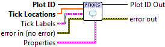

Set Y Ticks¶
Set the Y axis tick locations, and optionally labels, for linear axis scales.

 Plot ID/Plot ID Out
Plot ID/Plot ID Out- Plot identifier. Plot ID Out always contains the same value as Plot ID.
 Tick Locations
Tick Locations- Locations of Y-axis ticks (in data units).
- Tick Labels
- Labels for the ticks. By default, appropriate labels are chosen based on the type of data plotted and its range.
- Properties
Property cluster, available under the “Properties” subpalette.
 Text
TextControls display of the tick labels.
 Color
Color- Text color (PlotColor or LabView color).
- Background Color
- Color of text background (box directly behind the text.) PlotColor or LabView color.
- Font Size
- Size of text. Choosing a relative size (Small, Medium, Large, etc.) from the drop-down is recommended. You can also choose “Other” and specify an absolute font size (in points) manually.
 Font Style
Font Style- Style of font (normal, italic, bold).
 Rotation angle
Rotation angle- Angle of rotation (about left bottom corner).

 Error In/Out
Error In/Out- Terminals for standard error functionality.
Errors¶
Other information¶
If tick values are given which are offscreen, the plot will be expanded to display them. See Set Axis Limits to set the X and Y axis ranges explicitly.
Non-finite (NaN or Inf) entries in Tick Locations are ignored, as are corresponding entries in Tick Labels.
If the axis scale is log or symlog, error 402906 - Operation Not Supported for Axis Scale will result.